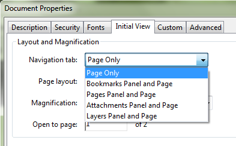

When to change the Initial View Setting in Adobe Acrobat¶
Users can generate PDFs from almost every application in Windows, MacOSX, Linux and even mobile OS apps from Android and iOS. However, one of the advantages of working in Adobe Acrobat is the ability to customize how a PDF is displayed when opening the document in Adobe Reader.
With the popularity of smaller form factors and PDF readers/apps that are not necessarily compliant to Adobe’s PDF engine, it’s understandable, however, that customizing PDF settings such as Initial View is often ineffective. The Adobe Reader app for Android, for example, will not necessarily follow the Initial View setting due to app and display constraints.
It does, however, make sense to setup Initial View if the PDF is for professional publishing and distributed in an enterprise environment which uses Adobe products, particularly an updated version of Adobe Reader. The Initial View option is a simple and easy way to impress or provide an impact to readers when providing a professional document such as an official report, curriculum vitae, manuscript or official documentation.
In Adobe Acrobat Pro 9 and later versions, you can customize the Initial View by opening the PDF and clicking File then Properties or by clicking CTRL+D. On the Initial View tab you can change the Layout and Magnification, Window, and User Interface options.
Window Options and User Interface options¶
In today’s world of tablets and hybrid machines, the Window Options setting isn’t as necessary particularly since today’s display resolutions are so high even on smaller devices such as smartphones and tablets. If you’re producing your PDF in an enterprise environment where notebook size and desktops are standardized, however, you can change options.
Finally, the User Interface options hide Adobe Reader’s window and application bars. In most cases, this creates a pretty jarring effect on a reader, somewhat like opening a PowerPoint presentation that automatically runs the first slide. Most users would prefer to skim through a PDF document first with access to menu and tool bars rather than be forced to press ESC.